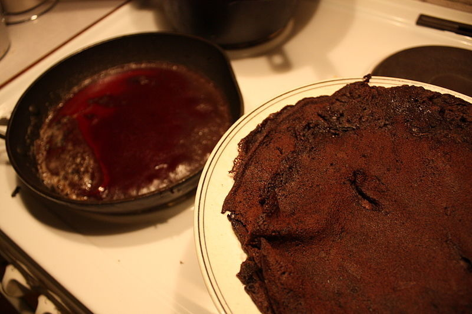
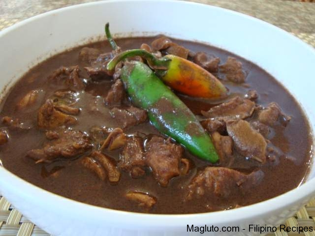
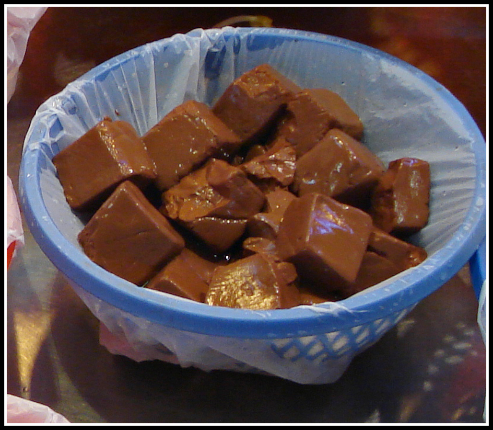

| Ingredients | Directions | 1 3/4 cup of Joe Baker | Thaw Joe's blood overnight if frozen |
|---|---|
| 1 3/4 cup of milk | Mince onion and saute in butter until translucents. Let cool. |
| 1 3/4 cup of rye flour | Strain Joe into bowl. |
| An egg | Whisk Joe and milk together. |
| 2 tsp of dark molasses | Add molasses, salt, pepper, and marjoram. |
| pinch of pepper | Slowly whisk in flour and stir until the mixture is smooth. |
| 1/8 tsp of dried marjoram | Add the sauteed onion. |
| A small onion | Cover the batter and let sit for an hour, so the flour will swell. |
| butter | Heat frying pan until sizzling |
| Butter the pan generously. Pour first batch of pancakes. | |
| Continue until batter is finished. | |
| Serve your Joe Baker pancakes hot with cranberry sauce or lingonberry jam. |

| Ingredients | Directions | 2 cups of John Smith | Mix the salt into the blood |
|---|---|
| 1 tsp salt | Mix the blood with the cream. |
| 1 cup of cream of cream | Mix-in the bread-crumbs, pepper, mace and tansy. |
| 1 cup of bread crumbs | Pour into greased glass dish and bake at 300 to 350 degrees for about an hour. |
| 2 tsp of dark molasses | Cool and then put in refridgerator. |
| 1/3 tsp of pepper | Drisheen is best served sliced, either fried or grilled, with bacon, eggs, or sausage. |
| Ingredients | Directions | 1 lb pork loin, cut into cubes | Sauté the garlic and onion in a pan |
|---|---|
| 1 cup vinegar | Add the pork and sauté for about 5 mins |
| 2 pcs long green pepper | If you'd like it to be more tasty, you could add 1 pork or beef cube followed by a cup or two of water. |
| 1 1/2 tbsp brown sugar | Simmer until the water is almost gone to tenderize the meat. |
| 1 medium sized onion, chopped finely | Add Alex's blood and mix well. Let this simmer for 10 minutes. |
| 1 tbsp garlic, minced | Add the vinegar. Simmer for 15 minutes. |
| 1 tbsp cooking oil | Put the brown sugar in followed by the long green pepper and simmer for 2 minutes. |
| 1 cup water | Serve hot |
| 10 oz of Alex Huettman | Enjoy your meal! |

| Ingredients | Directions | 1 pint of whole milk | On medium heat add the sugar and milk to simmering milk and mix until sugar dissolves |
|---|---|
| 1 pint of Gairren Boysel | Stir in vanilla |
| 12 oz. dark chocolate, broken into small pieces | Add the dark chocolate and stir until melted. |
| 1 pound of sugar | Add Gairren's blood and stir. |
| 1/2 tsp vanilla | Stir constantly. As the dolce cooks the mixture will thicken like custard. |
| Add the cinnamon and stir thoroughly. | |
| Cook until mixture has pudding consistency. | |
| Remove from heat and serve immediately. |

| Ingredients | Directions | 1 liter of John Brosius' Blood | Let blood sit in clean container for 10 minutes |
|---|---|
| salt | Collect coagulated bits |
| Pack them into a container | |
| Add salt |
